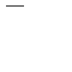

beginpath
beginpath(x=None, y=None)
Using the beginpath() and endpath() commands allow creating custom shapes. The two parameters of beginpath() set the location of the first point (origin) in the path. These parameters are optional. When not supplied, a starting location for the path should be given with the moveto() command. After calling the beginpath() command, a series of other path commands usually follow, for example moveto(), lineto(), or curveto(). Finally, the endpath() command draws the path to the screen.
 |
beginpath(10, 10)
lineto(40, 10)
endpath() |